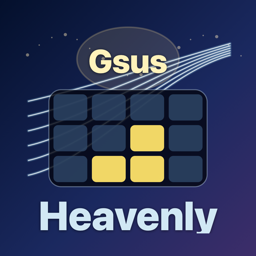
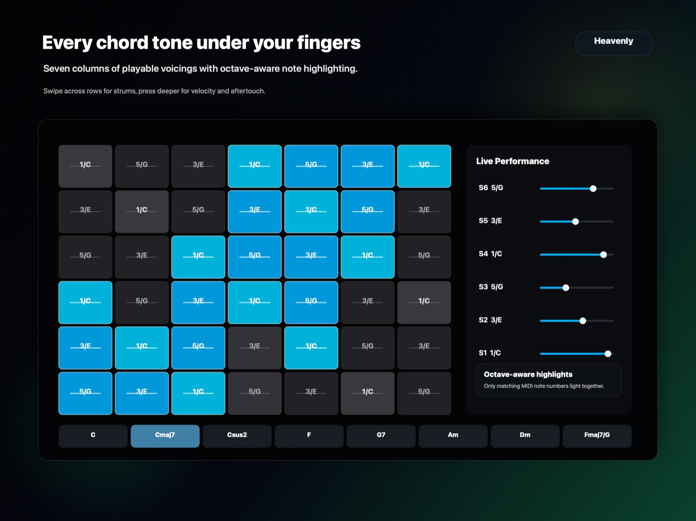

Expressive chord performer
Heavenly Chord Player
Choose rich chords and slash roots, then perform chord tones from expressive on-screen string buttons or an optional connected Lightpad Block M.
For chord exploration
Fast chord selection with immediate touch performance.
Heavenly Chord Player helps you select a key, chord quality, extension, or slash root from a compact chord matrix, then play the chord tones immediately from the device screen.
Built-in sound options and virtual MIDI output make it useful as a self-contained instrument or as a controller for other iOS music apps and hardware.
- Major, minor, sus, seventh, ninth, and slash-chord controls.
- Standard and extended string buttons for broader chord-tone layouts.
- Screen-only playing on iPhone and iPad.
- Built-in Warm Synth, Electric Piano, Organ, and Warm Pad sounds.
- Virtual MIDI output plus optional ROLI Lightpad Block M LED and touch integration.

Local-first privacy
Heavenly Chord Player does not collect user information.
No tracking
No advertising, analytics, or user tracking are included.
Local performance
MIDI, audio, and Bluetooth MIDI are used only on the user's device.
No account
No sign-in or BW Innovation TW cloud account is required.